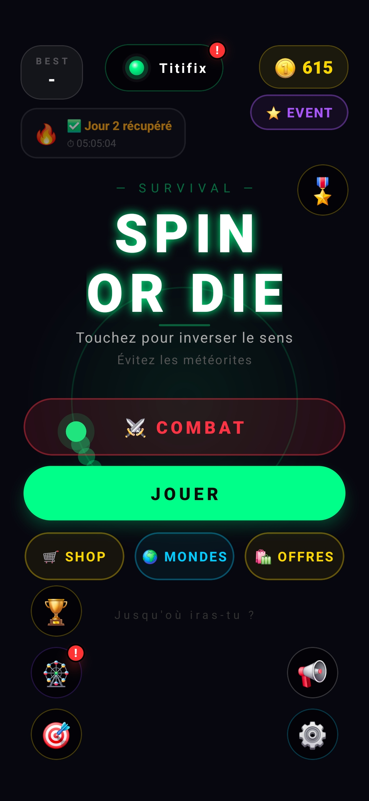
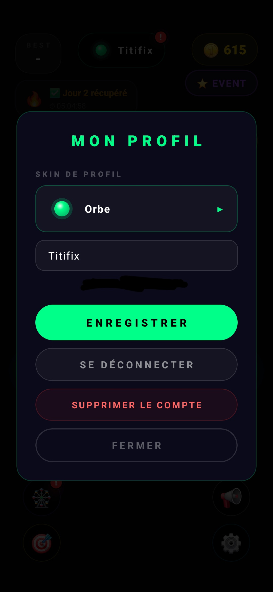
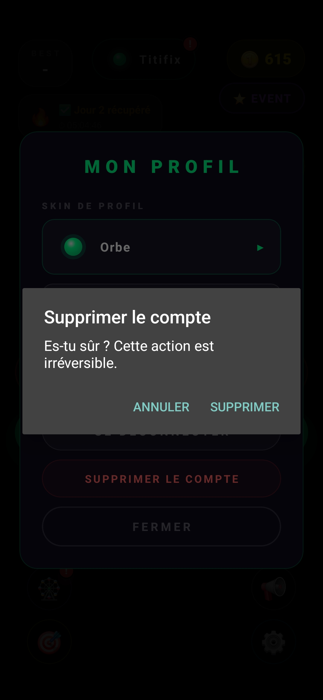

Vous souhaitez supprimer votre compte et vos données associées au jeu Spin Or Die ? Suivez les 3 étapes ci-dessous.
Attention : la suppression de votre compte est définitive et irréversible. Toutes vos données de jeu (score, progression, skins, classement) seront supprimées et ne pourront pas être récupérées.
Lancez Spin Or Die, puis rendez-vous dans le menu Profil ou votre Pseudo icône en haut de l'écran d'accueil.

Dans Mon Profil, faites défiler jusqu'à l'option Supprimer mon compte et appuyez dessus.

Une fenêtre de confirmation apparaît. Appuyez sur SUPPRIMER pour supprimer définitivement votre compte et toutes vos données.

Une question ou un problème ? Contactez-moi directement.